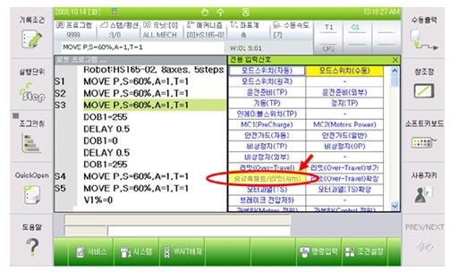
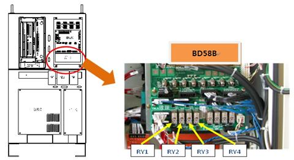
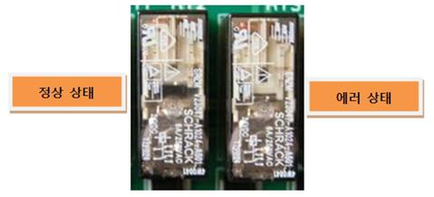
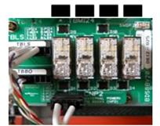
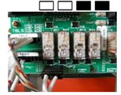
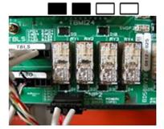
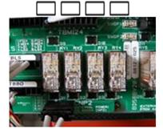
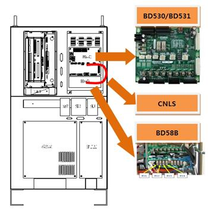
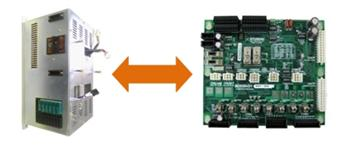

개 요
로봇의 구동 축 중 벨트로 동력이 전달되는 축에 설치된 센서가 벨트의 유무를 판단하고 있습니다. 벨트의 파단으로 인하여 센서의 검지 범위 이내에 벨트가 없을 경우 에러가 발생하게 됩니다. 또한, 센서와 제어기에 장착된 보드 사이에 연결에 이상이 생겨도 에러가 발생합니다.
원인 및 점검방법
|
1. 에러 발생 상태를 확인하여 주십시오. 1) 모니터링 창에서 전용 입력신호를 확인하여 주십시오. 2) BD58B 보드의 릴레이 동작 상태를 확인하여 주십시오.
<모니터링 창에서는 에러 상태이고, 릴레이는 정상(ON)인 경우> 2. 에러 검지 관련 부품을 점검하여 주십시오. 1) CNSGC 케이블을 교체한 후 점검하여 주십시오. 2) BD530/BD531 보드를 교체한 후 점검하여 주십시오.
<모니터링 창에서도 에러이고, 릴레이가 비정상(OFF)인 경우> 3. 로봇을 점검하여 주십시오. 1) 로봇 구동부의 벨트의 상태를 확인하여 주십시오. 2) 벨트 파단 검지 센서의 동작을 확인하여 주십시오.
|
1. 에러 발생 상태를 확인하여 주십시오.
1) TP510의 모니터링 창에서 전용 입력신호를 확인
우선 티칭펜던트의 전용 입력신호 창에서 승강축벨트/리밋(Arm) 항목이 계속 입력되고 있는지를 확인합니다. 이 창은 서비스 à 1:모니터링 à 2:입출력신호 à 1:전용 입력신호를 선택하면 볼 수 있습니다. 승강축벨트/리밋(Arm) 항목이 황색표시가 되어 있으면 에러상태를 나타냅니다.

그림 1. 전용 입력신호에서 승강축 벨트 확인
2) BD58B 보드의 릴레이 동작 상태 확인
로봇 구동부에 설치된 근접 센서는 벨트 표면에 빛의 반사 여부로 파단을 검지하여 ON/OFF 신호를 제어기로 송신합니다. 제어기에 입력된 신호는 BD58B 보드에서 낙하방지 브레이크 연동과 동시에 시스템 보드인 BD530로 전달됩니다. BD58B 보드의 릴레이 동작 상태로 센서의 동작 여부를 확인하십시오.

그림 2. BD58B 보드의 릴레이 상태 확인
BD58B 보드의 릴레이 동작 상태는 아래의 그림과 같이 확인할 수 있습니다. 정상 상태의 릴레이는 코일이 동작하여 중앙에 공백이 확인됩니다.

그림 3. BD58B 보드의 릴레이의 정상과 에러 상태 비교
BD58B 보드의 릴레이 동작 상태로 로봇 내 어느 축의 검지 센서가 동작하는지를 확인할 수 있습니다.
|
① 정상일 경우 |
② Z1 센서 Off시(Z1축 파단) |
|
 |
 |
|
③ Z2 센서 Off시 (Z2축 파단) |
④ Z1/Z2 동시 센서 Off시 (Z1/Z2축 파단) |
|
 |
 |
그림 4. BD58B 보드의 릴레이에서 에러 발생 위치 확인
2. 에러 검지 관련 부품을 점검하여 주십시오.
모니터링 창의 전용 입력신호와 BD58B보드의 릴레이 상태가 다르게 확인된 경우에는 BD58B와 BD530/BD531를 연결하는 CNLS 케이블 또는 BD530/BD531의 불량입니다. 매뉴얼의 제어기 구성을 참고하여 각 부품별로 점검하여 주십시오.

그림 5. BD530/BD531의 교체
1) CNLS 케이블 교체 점검
CNLS 케이블을 정상품과 교체하여 에러가 발생하지 않으면 케이블의 접속 불량입니다. CNLS 케이블을 정상품으로 교체하여 사용하시기 바랍니다.
2) BD530/BD531 교체 점검
BD530/BD531을 정상품과 교체하여 에러가 발생하지 않으면 해당 보드의 불량입니다. BD530/BD531을 정상품으로 교체하여 사용하시기 바랍니다.

그림 6. BD530/BD531의 교체
3. 로봇을 점검하여 주십시오.
모니터링 창의 전용 입력신호와 BD58B보드의 릴레이 상태가 일치하는 경우에는 BD58B에서 실제로 센서의 에러 동작을 인식하였습니다. 로봇의 벨트와 검지 센서를 확인해야 합니다. 로봇 점검 시 센서의 오동작에 의해 승강축의 낙하를 방지하기 위해서는 반드시 BB58B보드의 CNZB1과 CNBZ2 커넥터를 분리하여 주십시오.
1) 로봇 구동부의 벨트 상태를 확인
BD58B의 릴레이의 상태로 확인된 축의 벨트를 로봇에서 확인하여 주십시오. 벨트의 적용 여부와 위치는 로봇의 기종에 따라 변경될 수 있습니다. 로봇 납입 사양서 및 로봇 보수 매뉴얼을 참고하여 벨트의 상태를 점검하여 주십시오..
그림 7. 승강축 벨트와 파단 센서의 검지
2) 벨트 파단 검지 센서의 동작을 확인
검지 센서는 광학타입으로서 일정거리 범위 내에 물체가 인식되는 경우에만 정상으로 검출하고, 그 범위를 벗어나는 경우에는 에러로 처리된다. 검지센서의 전면에서 물체의 거리를 변경하여 TP510의 전용 입력신호의 상태를 확인하여 주십시오. 센서의 동작과 모니터링의 결과가 일치하지 않는 경우에는 로봇 내부의 센서와 제어기 내 BD58B 보드의 TBBO 터미널 블록 사이의 신호선 연결을 확인하여 주십시오. 센서의 LED가 녹색으로 표시되는 경우에는 정상상태이고, 적색으로 바뀌는 경우가 에러 상태입니다.